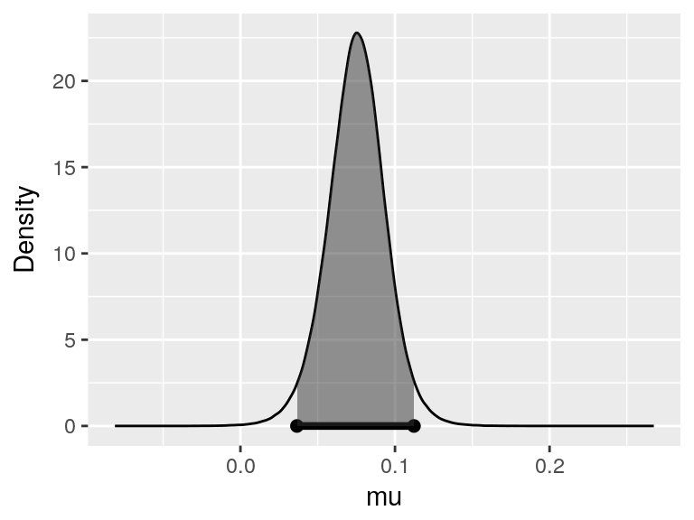
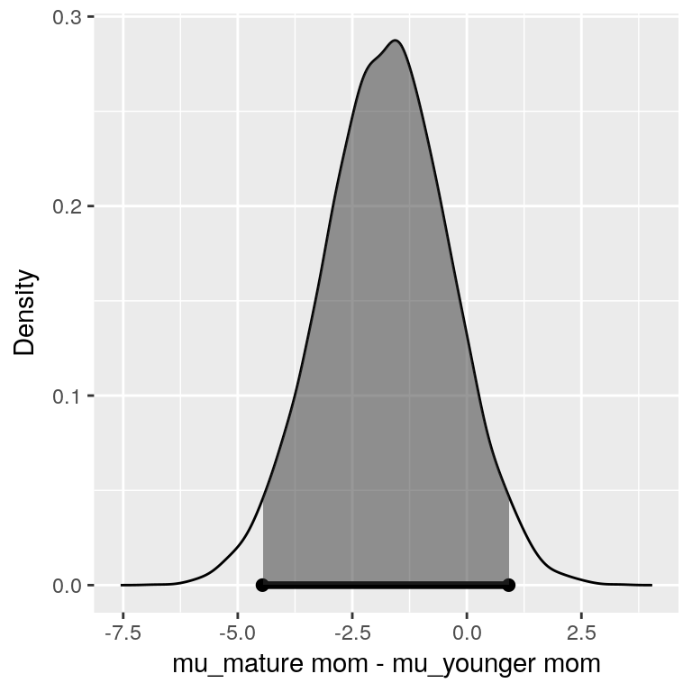
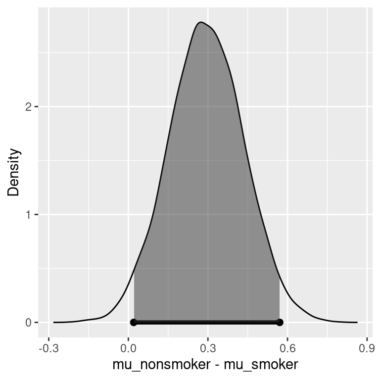

Chapter 5 Hypothesis Testing with Normal Populations
In Section 3.5, we described how the Bayes factors can be used for hypothesis testing. Now we will use the Bayes factors to compare normal means, i.e., test whether the mean of a population is zero or compare two groups of normally-distributed populations. We divide this mission into three cases: known variance for a single population, unknown variance for a single population using paired data, and unknown variance using two independent groups.
5.1 Bayes Factors for Testing a Normal Mean: variance known
Now we show how to obtain Bayes factors for testing hypothesis about a normal mean, where the variance is known. To start, let’s consider a random sample of observations from a normal population with mean \(\mu\) and pre-specified variance \(\sigma^2\). We consider testing whether the population mean \(\mu\) is equal to \(m_0\) or not.
Therefore, we can formulate the data and hypotheses as below:
Data \[Y_1, \cdots, Y_n {\mathrel{\mathop{\sim}\limits^{\rm iid}}}{\textsf{N}}(\mu, \sigma^2)\]
Hypotheses
- \(H_1: \mu = m_0\)
- \(H_2: \mu \neq m_0\)
Priors
We also need to specify priors for \(\mu\) under both hypotheses. Under \(H_1\), we assume that \(\mu\) is exactly \(m_0\), so this occurs with probability 1 under \(H_1\). Now under \(H_2\), \(\mu\) is unspecified, so we describe our prior uncertainty with the conjugate normal distribution centered at \(m_0\) and with a variance \(\sigma^2/\mathbf{n_0}\). This is centered at the hypothesized value \(m_0\), and it seems that the mean is equally likely to be larger or smaller than \(m_0\), so a dividing factor \(n_0\) is given to the variance. The hyper parameter \(n_0\) controls the precision of the prior as before.
In mathematical terms, the priors are:
- \(H_1: \mu = m_0 \text{ with probability 1}\)
- \(H_2: \mu \sim {\textsf{N}}(m_0, \sigma^2/\mathbf{n_0})\)
Bayes Factor
Now the Bayes factor for comparing \(H_1\) to \(H_2\) is the ratio of the distribution, the data under the assumption that \(\mu = m_0\) to the distribution of the data under \(H_2\).
\[\begin{aligned} {\textit{BF}}[H_1 : H_2] &= \frac{p({\text{data}}\mid \mu = m_0, \sigma^2 )} {\int p({\text{data}}\mid \mu, \sigma^2) p(\mu \mid m_0, \mathbf{n_0}, \sigma^2)\, d \mu} \\ {\textit{BF}}[H_1 : H_2] &=\left(\frac{n + \mathbf{n_0}}{\mathbf{n_0}} \right)^{1/2} \exp\left\{-\frac 1 2 \frac{n }{n + \mathbf{n_0}} Z^2 \right\} \\ Z &= \frac{(\bar{Y} - m_0)}{\sigma/\sqrt{n}} \end{aligned}\]
The term in the denominator requires integration to account for the uncertainty in \(\mu\) under \(H_2\). And it can be shown that the Bayes factor is a function of the observed sampled size, the prior sample size \(n_0\) and a \(Z\) score.
Let’s explore how the hyperparameters in \(n_0\) influences the Bayes factor in Equation (5.1). For illustration we will use the sample size of 100. Recall that for estimation, we interpreted \(n_0\) as a prior sample size and considered the limiting case where \(n_0\) goes to zero as a non-informative or reference prior.
\[\begin{equation} \textsf{BF}[H_1 : H_2] = \left(\frac{n + \mathbf{n_0}}{\mathbf{n_0}}\right)^{1/2} \exp\left\{-\frac{1}{2} \frac{n }{n + \mathbf{n_0}} Z^2 \right\} \tag{5.1} \end{equation}\]Figure 5.1 shows the Bayes factor for comparing \(H_1\) to \(H_2\) on the y-axis as \(n_0\) changes on the x-axis. The different lines correspond to different values of the \(Z\) score or how many standard errors \(\bar{y}\) is from the hypothesized mean. As expected, larger values of the \(Z\) score favor \(H_2\).
Figure 5.1: Vague prior for mu: n=100
But as \(n_0\) becomes smaller and approaches 0, the first term in the Bayes factor goes to infinity, while the exponential term involving the data goes to a constant and is ignored. In the limit as \(n_0 \rightarrow 0\) under this noninformative prior, the Bayes factor paradoxically ends up favoring \(H_1\) regardless of the value of \(\bar{y}\).
The takeaway from this is that we cannot use improper priors with \(n_0 = 0\), if we are going to test our hypothesis that \(\mu = n_0\). Similarly, vague priors that use a small value of \(n_0\) are not recommended due to the sensitivity of the results to the choice of an arbitrarily small value of \(n_0\).
This problem arises with vague priors – the Bayes factor favors the null model \(H_1\) even when the data are far away from the value under the null – are known as the Bartlett’s paradox or the Jeffrey’s-Lindleys paradox.
Now, one way to understand the effect of prior is through the standard effect size
\[\delta = \frac{\mu - m_0}{\sigma}.\] The prior of the standard effect size is
\[\delta \mid H_2 \sim {\textsf{N}}(0, \frac{1}{\mathbf{n_0}})\]
This allows us to think about a standardized effect independent of the units of the problem. One default choice is using the unit information prior, where the prior sample size \(n_0\) is 1, leading to a standard normal for the standardized effect size. This is depicted with the blue normal density in Figure 5.2. This suggested that we expect that the mean will be within \(\pm 1.96\) standard deviations of the hypothesized mean with probability 0.95. (Note that we can say this only under a Bayesian setting.)
In many fields we expect that the effect will be small relative to \(\sigma\). If we do not expect to see large effects, then we may want to use a more informative prior on the effect size as the density in orange with \(n_0 = 4\). So they expected the mean to be within \(\pm 1/\sqrt{n_0}\) or five standard deviations of the prior mean.
Figure 5.2: Prior on standard effect size
Therefore, we are testing \(H_1: \mu = 0.5\) versus \(H_2: \mu \neq 0.5\). Let’s use a prior that suggests we do not expect a large effect which leads the following solution for \(n_0\). Assume we want a standard effect of 0.03, there is a 95% chance that it is between \((-0.03/\sigma, 0.03/\sigma)\), with \(n_0 = (1.96\sigma/0.03)^2 = 32.7^2\).
Figure 5.3 shows our informative prior in blue, while the unit information prior is in orange. On this scale, the unit information prior needs to be almost uniform for the range that we are interested.
Figure 5.3: Prior effect in the extra sensory perception test
A very large data set with over 104 million trials was collected to test this hypothesis, so we use a normal distribution to approximate the distribution the sample mean.
- Sample size: \(n = 1.0449 \times 10^8\)
- Sample mean: \(\bar{y} = 0.500177\), standard deviation \(\sigma = 0.5\)
- \(Z\)-score: 3.61
Now using our prior in the data, the Bayes factor for \(H_1\) to \(H_2\) was 0.46, implying evidence against the hypothesis \(H_1\) that \(\mu = 0.5\).
- Informative \({\textit{BF}}[H_1:H_2] = 0.46\)
- \({\textit{BF}}[H_2:H_1] = 1/{\textit{BF}}[H_1:H_2] = 2.19\)
Now, this can be inverted to provide the evidence in favor of \(H_2\). The evidence suggests that the hypothesis that the machine operates with a probability that is not 0.5, is 2.19 times more likely than the hypothesis the probability is 0.5. Based on the interpretation of Bayes factors from Table 3.5, this is in the range of “not worth the bare mention”.
To recap, we present expressions for calculating Bayes factors for a normal model with a specified variance. We show that the improper reference priors for \(\mu\) when \(n_0 = 0\), or vague priors where \(n_0\) is arbitrarily small, lead to Bayes factors that favor the null hypothesis regardless of the data, and thus should not be used for hypothesis testing.
Bayes factors with normal priors can be sensitive to the choice of the \(n_0\). While the default value of \(n_0 = 1\) is reasonable in many cases, this may be too non-informative if one expects more effects. Wherever possible, think about how large an effect you expect and use that information to help select the \(n_0\).
All the ESP examples suggest weak evidence and favored the machine generating random 0’s and 1’s with a probability that is different from 0.5. Note that ESP is not the only explanation – a deviation from 0.5 can also occur if the random number generator is biased. Bias in the stream of random numbers in our pseudorandom numbers has huge implications for numerous fields that depend on simulation. If the context had been about detecting a small bias in random numbers what prior would you use and how would it change the outcome? You can experiment it in R or other software packages that generate random Bernoulli trials.
Next, we will look at Bayes factors in normal models with unknown variances using the Cauchy prior so that results are less sensitive to the choice of \(n_0\).
5.2 Comparing Two Paired Means using Bayes Factors
We previously learned that we can use a paired t-test to compare means from two paired samples. In this section, we will show how Bayes factors can be expressed as a function of the t-statistic for comparing the means and provide posterior probabilities of the hypothesis that whether the means are equal or different.
Example 5.1 Trace metals in drinking water affect the flavor, and unusually high concentrations can pose a health hazard. Ten pairs of data were taken measuring the zinc concentration in bottom and surface water at ten randomly sampled locations, as listed in Table 5.1.
Water samples collected at the the same location, on the surface and the bottom, cannot be assumed to be independent of each other. However, it may be reasonable to assume that the differences in the concentration at the bottom and the surface in randomly sampled locations are independent of each other.| location | bottom | surface | difference |
|---|---|---|---|
| 1 | 0.430 | 0.415 | 0.015 |
| 2 | 0.266 | 0.238 | 0.028 |
| 3 | 0.567 | 0.390 | 0.177 |
| 4 | 0.531 | 0.410 | 0.121 |
| 5 | 0.707 | 0.605 | 0.102 |
| 6 | 0.716 | 0.609 | 0.107 |
| 7 | 0.651 | 0.632 | 0.019 |
| 8 | 0.589 | 0.523 | 0.066 |
| 9 | 0.469 | 0.411 | 0.058 |
| 10 | 0.723 | 0.612 | 0.111 |
To start modeling, we will treat the ten differences as a random sample from a normal population where the parameter of interest is the difference between the average zinc concentration at the bottom and the average zinc concentration at the surface, or the main difference, \(\mu\).
In mathematical terms, we have
- Random sample of \(n= 10\) differences \(Y_1, \ldots, Y_n\)
- Normal population with mean \(\mu \equiv \mu_B - \mu_S\)
In this case, we have no information about the variability in the data, and we will treat the variance, \(\sigma^2\), as unknown.
The hypothesis of the main concentration at the surface and bottom are the same is equivalent to saying \(\mu = 0\). The second hypothesis is that the difference between the mean bottom and surface concentrations, or equivalently that the mean difference \(\mu \neq 0\).
In other words, we are going to compare the following hypotheses:
- \(H_1: \mu_B = \mu_S \Leftrightarrow \mu = 0\)
- \(H_2: \mu_B \neq \mu_S \Leftrightarrow \mu \neq 0\)
The Bayes factor is the ratio between the distributions of the data under each hypothesis, which does not depend on any unknown parameters.
\[{\textit{BF}}[H_1 : H_2] = \frac{p({\text{data}}\mid H_1)} {p({\text{data}}\mid H_2)}\]
To obtain the Bayes factor, we need to use integration over the prior distributions under each hypothesis to obtain those distributions of the data.
\[{\textit{BF}}[H_1 : H_2] = \iint p({\text{data}}\mid \mu, \sigma^2) p(\mu \mid \sigma^2) p(\sigma^2 \mid H_2)\, d \mu \, d\sigma^2\]
This requires specifying the following priors:
- \(\mu \mid \sigma^2, H_2 \sim {\textsf{N}}(0, \sigma^2/n_0)\)
- \(p(\sigma^2) \propto 1/\sigma^2\) for both \(H_1\) and \(H_2\)
\(\mu\) is exactly zero under the hypothesis \(H_1\). For \(\mu\) in \(H_2\), we start with the same conjugate normal prior as we used in Section 5.1 – testing the normal mean with known variance. Since we assume that \(\sigma^2\) is known, we model \(\mu \mid \sigma^2\) instead of \(\mu\) itself.
The \(\sigma^2\) appears in both the numerator and denominator of the Bayes factor. For default or reference case, we use the Jeffreys prior (a.k.a. reference prior) on \(\sigma^2\). As long as we have more than two observations, this (improper) prior will lead to a proper posterior.
After integration and rearranging, one can derive a simple expression for the Bayes factor:
\[{\textit{BF}}[H_1 : H_2] = \left(\frac{n + n_0}{n_0} \right)^{1/2} \left( \frac{ t^2 \frac{n_0}{n + n_0} + \nu } { t^2 + \nu} \right)^{\frac{\nu + 1}{2}}\]
This is a function of the t-statistic
\[t = \frac{|\bar{Y}|}{s/\sqrt{n}},\]
where \(s\) is the sample standard deviation and the degrees of freedom \(\nu = n-1\) (sample size minus one).
As we saw in the case of Bayes factors with known variance, we cannot use the improper prior on \(\mu\) because when \(n_0 \to 0\), then \({\textit{BF}}[H1:H_2] \to \infty\) favoring \(H_1\) regardless of the magnitude of the t-statistic. Arbitrary, vague small choices for \(n_0\) also lead to arbitrary large Bayes factors in favor of \(H_1\). Another example of the Barlett’s or Jeffreys-Lindley paradox.
Sir Herald Jeffrey discovered another paradox testing using the conjugant normal prior, known as the information paradox. His thought experiment assumed that our sample size \(n\) and the prior sample size \(n_0\). He then considered what would happen to the Bayes factor as the sample mean moved further and further away from the hypothesized mean, measured in terms standard errors with the t-statistic, i.e., \(|t| \to \infty\). As the t-statistic or information about the mean moved further and further from zero, the Bayes factor goes to a constant depending on \(n, n_0\) rather than providing overwhelming support for \(H_2\).
The bounded Bayes factor is
\[{\textit{BF}}[H_1 : H_2] \to \left( \frac{n_0}{n_0 + n} \right)^{\frac{n - 1}{2}}\]
Jeffrey wanted a prior with \({\textit{BF}}[H_1 : H_2] \to 0\) (or equivalently, \({\textit{BF}}[H_2 : H_1] \to \infty\)), as the information from the t-statistic grows, indicating the sample mean is as far as from the hypothesized mean and should favor \(H_2\).
To resolve the paradox when the information the t-statistic favors \(H_2\) but the Bayes factor does not, Jeffreys showed that no normal prior could resolve the paradox.
But a Cauchy prior on \(\mu\), would resolve it. In this way, \({\textit{BF}}[H_2 : H_1]\) goes to infinity as the sample mean becomes further away from the hypothesized mean. Recall that the Cauchy prior is written as \({\textsf{C}}(0, r^2 \sigma^2)\). While Jeffreys used a default of \(r = 1\), smaller values of \(r\) can be used if smaller effects are expected.
The combination of the Jeffrey’s prior on \(\sigma^2\) and this Cauchy prior on \(\mu\) under \(H_2\) is sometimes referred to as the Jeffrey-Zellener-Siow prior.
However, there is no closed form expressions for the Bayes factor under the Cauchy distribution. To obtain the Bayes factor, we must use the numerical integration or simulation methods.
We will use the function from the package to test whether the mean difference is zero in Example 5.1 (zinc), using the JZS (Jeffreys-Zellener-Siow) prior.
library(statsr)
bayes_inference(difference, data=zinc, statistic="mean", type="ht",
prior="JZS", mu_0=0, method="theo", alt="twosided")## Single numerical variable
## n = 10, y-bar = 0.0804, s = 0.0523
## (Using Zellner-Siow Cauchy prior: mu ~ C(0, 1*sigma)
## (Using Jeffreys prior: p(sigma^2) = 1/sigma^2
##
## Hypotheses:
## H1: mu = 0 versus H2: mu != 0
## Priors:
## P(H1) = 0.5 , P(H2) = 0.5
## Results:
## BF[H2:H1] = 50.7757
## P(H1|data) = 0.0193 P(H2|data) = 0.9807
##
## Posterior summaries for mu under H2:
## Single numerical variable
## n = 10, y-bar = 0.0804, s = 0.0523
## (Assuming Zellner-Siow Cauchy prior: mu | sigma^2 ~ C(0, 1*sigma)
## (Assuming improper Jeffreys prior: p(sigma^2) = 1/sigma^2
##
## Posterior Summaries
## 2.5% 25% 50% 75% 97.5%
## mu 0.03655149 0.06333647 0.07541455 0.08716220 0.1122255
## sigma 0.03665299 0.04740790 0.05531058 0.06555425 0.0955097
## n_0 0.16163060 1.88924880 4.73766526 10.11311220 32.3234939
##
## 95% CI for mu: (0.0366, 0.1122)
With equal prior probabilities on the two hypothesis, the Bayes factor is the posterior odds. From the output, we see this indicates that the hypothesis \(H_2\), the mean difference is different from 0, is almost 51 times more likely than the hypothesis \(H_1\) that the average concentration is the same at the surface and the bottom.
To sum up, we have used the Cauchy prior as a default prior testing hypothesis about a normal mean when variances are unknown. This does require numerical integration, but it is available in the function from the package. If you expect that the effect sizes will be small, smaller values of \(r\) are recommended.
It is often important to quantify the magnitude of the difference in addition to testing. The Cauchy Prior provides a default prior for both testing and inference; it avoids problems that arise with choosing a value of \(n_0\) (prior sample size) in both cases. In the next section, we will illustrate using the Cauchy prior for comparing two means from independent normal samples.
5.3 Comparing Independent Means: Hypothesis Testing
In the previous section, we described Bayes factors for testing whether the mean difference of paired samples was zero. In this section, we will consider a slightly different problem – we have two independent samples, and we would like to test the hypothesis that the means are different or equal.
Example 5.2 We illustrate the testing of independent groups with data from a 2004 survey of birth records from North Carolina, which are available in the package.
The variable of interest is – the weight gain of mothers during pregnancy. We have two groups defined by the categorical variable, , with levels, younger mom and older mom.
Question of interest: Do the data provide convincing evidence of a difference between the average weight gain of older moms and the average weight gain of younger moms?We will view the data as a random sample from two populations, older and younger moms. The two groups are modeled as:
\[\begin{equation} \begin{split} Y_{O,i} &\mathrel{\mathop{\sim}\limits^{\rm iid}} \textsf{N}(\mu + \alpha/2, \sigma^2) \\ Y_{Y,i} &\mathrel{\mathop{\sim}\limits^{\rm iid}} \textsf{N}(\mu - \alpha/2, \sigma^2) \end{split} \tag{5.2} \end{equation}\]The model for weight gain for older moms using the subscript \(O\), and it assumes that the observations are independent and identically distributed, with a mean \(\mu+\alpha/2\) and variance \(\sigma^2\).
For the younger women, the observations with the subscript \(Y\) are independent and identically distributed with a mean \(\mu-\alpha/2\) and variance \(\sigma^2\).
Using this representation of the means in the two groups, the difference in means simplifies to \(\alpha\) – the parameter of interest.
\[(\mu + \alpha/2) - (\mu - \alpha/2) = \alpha\]
You may ask, “Why don’t we set the average weight gain of older women to \(\mu+\alpha\), and the average weight gain of younger women to \(\mu\)?” We need the parameter \(\alpha\) to be present in both \(Y_{O,i}\) (the group of older women) and \(Y_{Y,i}\) (the group of younger women).
We have the following competing hypotheses:
- \(H_1: \alpha = 0 \Leftrightarrow\) The means are not different.
- \(H_2: \alpha \neq 0 \Leftrightarrow\) The means are different.
In this representation, \(\mu\) represents the overall weight gain for all women. (Does the model in Equation (5.2) make more sense now?) To test the hypothesis, we need to specify prior distributions for \(\alpha\) under \(H_2\) (c.f. \(\alpha = 0\) under \(H_1\)) and priors for \(\mu,\sigma^2\) under both hypotheses.
Recall that the Bayes factor is the ratio of the distribution of the data under the two hypotheses.
\[\begin{aligned} {\textit{BF}}[H_1 : H_2] &= \frac{p({\text{data}}\mid H_1)} {p({\text{data}}\mid H_2)} \\ &= \frac{\iint p({\text{data}}\mid \alpha = 0,\mu, \sigma^2 )p(\mu, \sigma^2 \mid H_1) \, d\mu \,d\sigma^2} {\int \iint p({\text{data}}\mid \alpha, \mu, \sigma^2) p(\alpha \mid \sigma^2) p(\mu, \sigma^2 \mid H_2) \, d \mu \, d\sigma^2 \, d \alpha} \end{aligned}\]
As before, we need to average over uncertainty and the parameters to obtain the unconditional distribution of the data. Now, as in the test about a single mean, we cannot use improper or non-informative priors for \(\alpha\) for testing.
Under \(H_2\), we use the Cauchy prior for \(\alpha\), or equivalently, the Cauchy prior on the standardized effect \(\delta\) with the scale of \(r\):
\[\delta = \alpha/\sigma^2 \sim {\textsf{C}}(0, r^2)\]
Now, under both \(H_1\) and \(H_2\), we use the Jeffrey’s reference prior on \(\mu\) and \(\sigma^2\):
\[p(\mu, \sigma^2) \propto 1/\sigma^2\]
While this is an improper prior on \(\mu\), this does not suffer from the Bartlett’s-Lindley’s-Jeffreys’ paradox as \(\mu\) is a common parameter in the model in \(H_1\) and \(H_2\). This is another example of the Jeffreys-Zellner-Siow prior.
As in the single mean case, we will need numerical algorithms to obtain the Bayes factor. Now the following output illustrates testing of Bayes factors, using the Bayes inference function from the package.
library(statsr)
data(nc)
bayes_inference(y=gained, x=mature, data=nc,type='ht',
statistic='mean', alternative='twosided', null=0,
prior='JZS', r=1, method='theo', show_summ=FALSE)## Hypotheses:
## H1: mu_mature mom = mu_younger mom
## H2: mu_mature mom != mu_younger mom
##
## Priors: P(H1) = 0.5 P(H2) = 0.5
##
## Results:
## BF[H1:H2] = 5.7162
## P(H1|data) = 0.8511
## P(H2|data) = 0.1489
##
## Posterior summaries for under H2:
## 95% Cred. Int.: (-4.338 , 0.9015)
We see that the Bayes factor for \(H_1\) to \(H_2\) is about 5.7, with positive support for \(H_1\) that there is no difference in average weight gain between younger and older women. Using equal prior probabilities, the probability that there is a difference in average weight gain between the two groups is about 0.15 given the data. Based on the interpretation of Bayes factors from Table 3.5, this is in the range of “positive” (between 3 and 20).
To recap, we have illustrated testing hypotheses about population means with two independent samples, using a Cauchy prior on the difference in the means. One assumption that we have made is that the variances are equal in both groups. The case where the variances are unequal is referred to as the Behren-Fisher problem, and this is beyond the scope for this course. In the next section, we will look at another example to put everything together with testing and discuss summarizing results.
5.4 Inference after Testing
In this section, we will work through another example for comparing two means using both hypothesis tests and interval estimates, with an informative prior. We will also illustrate how to adjust the credible interval after testing.
We would like to answer two questions:
Is there a difference in average birth weight between the two groups?
If there is a difference, how large is the effect?
As before, we need to specify models for the data and priors. We treat the data as a random sample for the two populations, smokers and non-smokers.
The birth weights of babies born to non-smokers, designated by a subgroup \(N\), are assumed to be independent and identically distributed from a normal distribution with mean \(\mu + \alpha/2\), as in Section 5.3.
\[Y_{N,i} {\mathrel{\mathop{\sim}\limits^{\rm iid}}}{\textsf{N}}(\mu + \alpha/2, \sigma^2)\]
While the birth weights of the babies born to smokers, designated by the subgroup \(S\), are also assumed to have a normal distribution, but with mean \(\mu - \alpha/2\).
\[Y_{S,i} {\mathrel{\mathop{\sim}\limits^{\rm iid}}}{\textsf{N}}(\mu - \alpha/2, \sigma^2)\]
The difference in the average birth weights is the parameter \(\alpha\), because
\[(\mu + \alpha/2) - (\mu - \alpha/2) = \alpha\].
The hypotheses that we will test are \(H_1: \alpha = 0\) versus \(H_2: \alpha \ne 0\).
We will still use the Jeffreys-Zellner-Siow Cauchy prior. However, since we may expect the standardized effect size to not be as strong, we will use a scale of \(r = 0.5\) rather than 1.
Therefore, under \(H_2\), we have
\[\delta = \alpha/\sigma \sim {\textsf{C}}(0, r^2), \text{ with } r = 0.5.\]
Under both \(H_1\) and \(H_2\), we will use the reference priors on \(\mu\) and \(\sigma^2\):
\[\begin{aligned} p(\mu) &\propto 1 \\ p(\sigma^2) &\propto 1/\sigma^2 \end{aligned}\]
The input to the base inference function is similar, but now we will specify that \(r = 0.5\).
library(statsr)
data(nc)
out =bayes_inference(y=weight, x=habit, data=nc,type='ht', null=0,
statistic='mean', alternative='twosided',
prior='JZS', r=.5, method='sim', show_summ=FALSE)## Hypotheses:
## H1: mu_nonsmoker = mu_smoker
## H2: mu_nonsmoker != mu_smoker
##
## Priors: P(H1) = 0.5 P(H2) = 0.5
##
## Results:
## BF[H2:H1] = 1.4402
## P(H1|data) = 0.4098
## P(H2|data) = 0.5902
##
## Posterior summaries for under H2:
## 95% Cred. Int.: (0.0265 , 0.5744)
We see that the Bayes factor is 1.44, which weakly favors there being a difference in average birth weights for babies whose mothers are smokers versus mothers who did not smoke. Converting this to a probability, we find that there is about a 60% chance of the average birth weights are different.
While looking at evidence of there being a difference is useful, Bayes factors and posterior probabilities do not convey any information about the magnitude of the effect. Reporting a credible interval or the complete posterior distribution is more relevant for quantifying the magnitude of the effect.
Using the function, we can generate samples from the posterior distribution under \(H_2\) using the option.
out.ci = bayes_inference(y=weight, x=habit, data=nc, type='ci',
statistic='mean', prior='JZS', mu_0=0,
r=.5, method='sim', verbose=FALSE)
print(out.ci$summary, digits=2)## 2.5% 25% 50% 75% 97.5%
## overall mean 6.853 6.94 7.0 7.04 7.1e+00
## mu_nonsmoker - mu_smoker 0.026 0.21 0.3 0.39 5.7e-01
## sigma^2 2.073 2.19 2.3 2.33 2.5e+00
## effect size 0.018 0.14 0.2 0.26 3.8e-01
## n_0 172.925 2001.17 4666.9 9459.48 2.6e+04The 2.5 and 97.5 percentiles for the difference in the means provide a 95% credible interval of 0.023 to 0.57 pounds for the difference in average birth weight. The MCMC output shows not only summaries about the difference in the mean \(\alpha\), but the other parameters in the model.
In particular, the Cauchy prior arises by placing a gamma prior on \(n_0\) and the conjugate normal prior. This provides quantiles about \(n_0\) after updating with the current data.
The row labeled effect size is the standardized effect size \(\delta\), indicating that the effects are indeed small relative to the noise in the data.
library(ggplot2)
out = bayes_inference(y=weight, x=habit, data=nc,type='ht',
statistic='mean', alternative='twosided',
prior='JZS', null=0, r=.5, method='theo',
show_summ=FALSE, show_res=FALSE, show_plot=TRUE)
Figure 5.4: Estimates of effect under H2
Figure 5.4 shows the posterior density for the difference in means, with the 95% credible interval indicated by the shaded area. Under \(H_2\), there is a 95% chance that the average birth weight of babies born to non-smokers is 0.023 to 0.57 pounds higher than that of babies born to smokers.
The previous statement assumes that \(H_2\) is true and is a conditional probability statement. In mathematical terms, the statement is equivalent to
\[P(0.023 < \alpha < 0.57 \mid {\text{data}}, H_2) = 0.95\]
However, we still have quite a bit of uncertainty based on the current data, because given the data, the probability of \(H_2\) being true is 0.59.
\[P(H_2 \mid {\text{data}}) = 0.59\]
Using the law of total probability, we can compute the probability that \(\mu\) is between 0.023 and 0.57 as below:
\[\begin{aligned} & P(0.023 < \alpha < 0.57 \mid {\text{data}}) \\ = & P(0.023 < \alpha < 0.57 \mid {\text{data}}, H_1)P(H_1 \mid {\text{data}}) + P(0.023 < \alpha < 0.57 \mid {\text{data}}, H_2)P(H_2 \mid {\text{data}}) \\ = & I( 0 \text{ in CI }) P(H_1 \mid {\text{data}}) + 0.95 \times P(H_2 \mid {\text{data}}) \\ = & 0 \times 0.41 + 0.95 \times 0.59 = 0.5605 \end{aligned}\]
Finally, we get that the probability that \(\alpha\) is in the interval, given the data, averaging over both hypotheses, is roughly 0.56. The unconditional statement is the average birth weight of babies born to nonsmokers is 0.023 to 0.57 pounds higher than that of babies born to smokers with probability 0.56. This adjustment addresses the posterior uncertainty and how likely \(H_2\) is.
To recap, we have illustrated testing, followed by reporting credible intervals, and using a Cauchy prior distribution that assumed smaller standardized effects. After testing, it is common to report credible intervals conditional on \(H_2\). We also have shown how to adjust the probability of the interval to reflect our posterior uncertainty about \(H_2\). In the next chapter, we will turn to regression models to incorporate continuous explanatory variables.